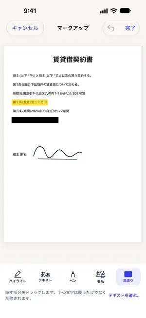

iPhoneでPDFの契約書に手書きで署名する方法（印刷不要）
最終更新 2026-10-22 · Paperkeep Pro の機能
メールで届いた契約書に署名して返すだけなら、印刷して再スキャンする必要はありません。Paperkeep Proの「署名」ツールなら、一度書いた署名を署名欄までドラッグして置けます。署名の画像は次の契約のために、このiPhoneのキーチェーンだけに保存されます。
まずは iOS の標準機能でやる方法
- メールの添付PDFを「ファイル」Appに保存して開きます。
- 右上のマークアップ（ペン先の形）ボタンをタップし、「＋」から「署名を追加」を選びます。
- 指で署名して「完了」を押すとページに入ります。大きさと位置を整えたら、もう一度「完了」で保存します。
- 署名はiOSの標準機能でも十分にできます。ただし元のPDFに直接保存されるので、署名前の状態も残したいなら先に複製しておきましょう。
Paperkeep でやる方法
- PDFで届いた契約書は、右上の「読み込む」ボタン（下向き矢印）から「ファイルから」を選んで取り込みます。紙の契約書なら「スキャン」で撮影します。
- 一覧で契約書を開き、魔法のステッキの形をした「ツール」ボタンから「署名」を選びます。
- 初回は「あなたの署名」画面が開きます。線の上に署名して「保存」をタップします。書き直したいときは「消去」を。
- ページ送りの矢印で署名するページを開き、署名を署名欄までドラッグします。日付や氏名は「テキスト」ツールで書き込めます。
- 「完了」をタップしたら、「ツール」→「書き出す…」でPDFを「共有」し、署名済みの契約書を返送します。

この書類ならではのコツ
- この方法は手書き署名の画像をPDFに入れるものです。電子契約サービスなど決まった手順がある契約は、相手の案内に従ってください。
- 押印が求められている契約書の場合、手書きの署名で代えられるかを先に相手先へ確認しましょう。
- 各ページにイニシャルが必要な書類は、ページごとに「署名」をタップすれば保存済みの署名がそのページに置かれます。
- 置き間違えた署名はタップして「マークを削除」、または取り消しボタンで戻せます。
まもなく App Store で公開します。